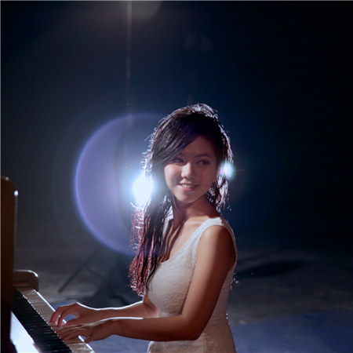

G.E.M. was born in Shanghai, China, and moved to Hong Kong at the age of four. She grew up with a musical background; her mother is an alumnae from Shanghai Conservatory of Music, her grandmother was a vocal coach, her grandfather was a saxophonist, and her uncle was a violinist. G.E.M. started to write songs at the age of thirteen. She featured in a performance on Hong Kong's Educational Television at the age of seven. She achieved ABRSM's piano grade 8 at the age of thirteen.
In 2006, G.E.M. won the champion in the singing competition titled Spice It Up, and caught the attention of Chang Tan, who offered her a recording deal with Hummingbird Music. She then became a professional singer at the age of 16. She graduated from Heep Woh Primary School and True Light Girls' College with a score of 21 points in HKCEE. In 2008, she attended Hong Kong Academy for Performing Arts, but dropped out in 2009 due to her decision to focus on her singing caree
G.E.M. performing during the X.X.X. Live Tour in Hong Kong, January 2015 In October 2008, G.E.M. released her debut self-titled EP G.E.M. which included two Mandarin songs and three Cantonese songs. She won a series of awards for the album, and was dubbed "Girl with Giant Lungs" and "Young Diva with Giant Lungs" for her vocal range.In May 2009, G.E.M. traveled to Los Angeles to record her first studio album, 18..., which was released in October 2009. In November 2009, she held her first concert 18 Live Concert at Hong Kong International Trade and Exhibition Centre, and the concert featured special guests including Jan Lamb and Justin Lo. In the same year, she also held a concert in Toronto. In 2010, G.E.M. went to Taiwan to promote the album 18..., and returned to Los Angeles to record her next studio album, My Secret, which was released in October 2010.
In May 2011, G.E.M. performed a three-day concerts titled Get Everybody Moving Tour in Hong Kong Coliseum, and became the youngest Hong Kong female artist to perform in the venue. She then performed another five concerts in the same venue in September and embarked a concert tour in eight countries.
In June 2012, she performed alongside Jason Mraz and Khalil Fong at the iTunes Live in Hong Kong, and sang "Lucky" with Jason Mraz. Her third studio album, Xposed, was released in July 2012. The lead single, "What Have U Done", peaked number one on all four pop music charts in Hong Kong.
2013–2015: X.X.X. Live Tour, I Am A Singer, and Heartbeat
G.E.M. performing during the X.X.X. Live Tour in Shanghai, May 2015 G.E.M. embarked her X.X.X. Live World Tour in April 2013 starting with five shows in Hong Kong Coliseum, and it ended with a total of 73 shows. In May 2013, her album Xposed earned her a Golden Melody Award nomination for Best Mandarin Female Singer.
In January 2014, she appeared in the Chinese singing competition I Am a Singer (season 2), and her second-place finish gained her immense and greater popularity and fame in mainland China. In the same year, she earned a World Music Award nomination for World's Best Female Artist and an MTV Europe Music Award nomination for Best Mainland China & Hong Kong Act. In November 2015, she appeared on the cover of China's Apple Music, and released her studio album Heartbeat with music videos of all ten tracks in the album. The album topped the iTunes chart in China. So far, her songs have been played over 9.8 billion times on KuGou, a music platform in China.
In 2016, she appeared on the list of Forbes 30 Under 30 (Music).[3] In the same year, she was asked to voice a lead role in the animated film Charming, alongside Demi Lovato, Ashley Tisdale, and Avril Lavigne. She also performed at Heroes of Remix (Chinese: 盖世英雄) that same year, singing EDM versions of songs such as Like You (喜欢你) and The Brightest Star In The Night Sky (夜空中最亮的星).In September 2016, she released her photobook 25 Looks and an EP, which includes four remix songs. In November 2016, she earned an MTV Europe Music Award for Best Mainland China & Hong Kong Act.
In May 2017, G.E.M released her first documentary G-Force, which was directed by Nick Wickham. In April 2017, she embarked her Queen of Hearts World Tour. On 21 October 2017, Wee Meng Chee (Chinese: 黃明志; pinyin: Huáng Míng Zhì), a Malaysian Chinese hip hop recording artist and composer featured her in a cover of his song Stranger In The North (漂向北 方)(KTV Version), which had received widespread popularity, where she sings the chorus which was originally performed by Taiwanese-American singer-songwriter Leehom Wang.